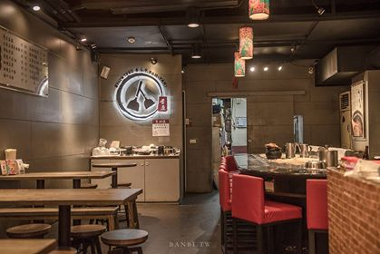

<haml><head>


<title>香連鐵板燒</title>


</head>


<body background="image/02.jpg">


<h1><font face="微軟正黑體">香連鐵板燒介紹</font></h1>


<a id=photo1>





<font color="#0000a0">民國81年開業的「香連鐵板燒」，<br></font>
<font color="#0000a0">原本是小攤子，一開始的店名則是「雙連鐵板燒」，<br></font>
<font color="#0000a0">後來第二代將店名更改為現在的「香連鐵板燒」。<P></font>
<font color="#0000a0">「香連鐵板燒」店面位置在民生西路上（寧夏夜市外圍），<br></font>
<font color="#0000a0">不過後來已搬移到寧夏夜市後段，靠近南京西路旁的建成圓環位置。<br></font>
<font color="#0000a0">距今已27年，以平價鐵板燒料理來說，算是營業時間較長久的老品牌。<P></font>
<font color="#0000a0">因為有特色，新聞媒體像是《食尚玩家》、《非凡大探索》等節目都有採訪報導。<p></font>  


<p>

<hr>


<iframe width="560" height="315" src="https://www.youtube.com/embed/8Kxk3uTEBrA" frameborder="0" allow="accelerometer; autoplay; encrypted-media; gyroscope; picture-in-picture" allowfullscreen></iframe>


<a href="index.html">福旺號</a>

<a href="3rd.html">周照子鐵板燒</a>

<a href="4th.html">甘妹弄堂</a>

<a href="5th.html">心得</a>


</body>

</html>
